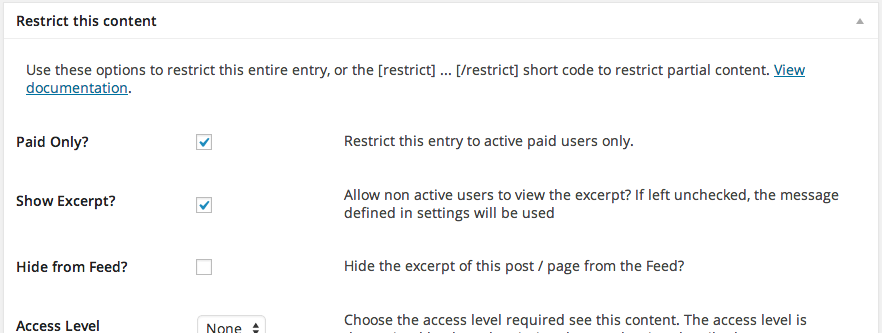

Updated: 09/18/2014
By: Aesopinteractive L.L.C.
Email: support@aesopinteractive.com
Thank you for purchasing our theme. If you have any questions that are beyond the scope of this help file, please feel free to email via our user page contact form here. Thanks so much!
Two ways to install. Pick your poison.
Easy Theme Installation (through WordPress)
Not so Easy (FTP)
Install Recommended Plugins
This theme was built for Aesop Story Engine, although it can be used without the plugin just as well. So, after installing and activating Novella, go ahead and install the Aesop Story Engine plugin. If you've accidentally dismissed the alert to install it, just head to Appearence--->Install Plugins, and you'll be able to install ASE within a couple of clicks.
The plugin provides all of the core functionality for the story componenets, and Novella paints the picture and makes things look awesome. This means you can switch out themes without ever loosing your components!
Due to the custom nature of this theme, some component options are not available, or have been overriden entirely by the theme as directed by the design. The following components have been modified and will explain what options are not available.
Options can be found under the "Novella" heading, within the WordPress theme customizer. You can get to the customizer within WordPress by going to Appearence-->Customize, or via the front of your site, using the WordPress administration bar up top. Hover over your sites name in the bar, and choose "customize."
Each post or story in Novella has it's own individual "link" and "accent" color controls. The link color controls the color of teh anchor links in the post. The accent color will control the color of all Aesop Story Engine component caption backgrounds, including galleries.
Restrict Content Pro - Sell story subscriptions with Restrict Content Pro, a premium third-party plugin (not included in Novella). Follow the directions for RCP and get a few level subscriptions setup. Then, go to an individual post and tick the box in RCP setting that says "Paid Only." The option to show the excerpt isn't needed but helpful if you wish to show a teaser.

You'll also need to add the welcome message. Go to your WordPress admin, then the Restrict tab, and under Settings, choose "Messages". Add the following under the Premium Content Message.
<h2>Story Subscription</h2>
<p>To continue reading the rest of this story, sign up for a subscription below.</p>
You can of course change the text, but keep the H2 and P intact inless you're doing something custom. The only other thing you need to know, is that the "Subscribe" button is connected to the checkout page, which you set under the "General" tab in Restrict Content Pro settings.
Novella provides styling support and a button for the checkout. RCP handles the rest!
Novella supports Aesop Story Highlights add-on. The only thing you should know about this add-on, is that the shortcode is automagically added to the page if you have highlights created. In other words, don't add the shortcode to the post, it happens automatically!
Whenever a new udpate is available for this theme, you'll be automatically notified and will be able to update to the new version automatically. To enable updates, the license key provided with your download must be entered and saved.
If you're reading this then it's assumed that you are a theme developer, and you understand what hooks, filters, and CSS preprocessors are. This theme has advanced functionality built-in, so read on to see how you can take advantage of this and make your life easy.
Included in your download, is a folder called "DevTools." Inside this folder are two files; package.json, and Gruntfile.js. If you do not know what Grunt is, then just ignore these files. If you do know what Grunt is, and you use it with your workflow, then just drop these two files into the "assets" directory of Novella. After they are there, run your npm install to install the node depencies, and you'll then be set to start working with the core LESS files.
I HIGHLY recommend first making a child theme, and copying over at least the assets directory so your changes will stay safe with theme updates.
The styles are built with LESS. They're built with LESS vs SASS because LESS is easier for new folks to learn, and it's syntax is shorter. Within the theme folder, you'll find the assets directory. Within the assets directory, you'll find the LESS and CSS directories. Inside the LESS directory, there's a folder called "source" which contains most of Twitter Boostrap 3.0. These files are then imported into the style.less file, where the rest of the sites styles live.
The style.less file is compiled into the style.css file that's enqueued by the theme. It's highly recommended to use a CSS preprocessor like Codekit, or a task runner such as Grunt, to compile these files. It's also important to know that ALL of the sites colors, can be controlled via the variables.less file, located within assets/less/source directory.
Setting up a child theme is the recommended way of manipulating and changing the layout. This keeps your changes in tact when a new theme update is available. We have included both a style.css and a functions.php in the "novella child" folder. Setting up a child theme is as easy as pasting the following in a new style.css file, in a new theme.
/* Theme Name: Novella Child Theme URI: Author: Author URI: Description: A child theme for Novella Version: 1.0 License: GNU General Public License v2 or later License URI: http://www.gnu.org/licenses/gpl-2.0.html Template: novella */
Then set up a functions.php file to enqueue this stylesheet.
Aesop Universal Theme Hooks
All Aesop themes share the same hooks, so users additions stay when travelling from theme to theme. Here's the list of the 16 Aesop Universal Theme Hooks.
Body
ase_theme_body_beforease_theme_body_inside_topase_theme_body_inside_bottomHeader
ase_theme_header_beforease_theme_header_inside_topase_theme_header_inside_bottomase_theme_header_afterPosts
ase_theme_post_beforease_theme_post_inside_topase_theme_post_inside_bottomase_theme_post_afterFooter
ase_theme_footer_beforease_theme_footer_inside_topase_theme_footer_inside_bottom
Filters
novella_story_by- filters the "by" textnovella_chapter_label_text- filters the "Chapters" menu labelnovella_highlights_label_text- filters the "Highlights" menu labelnovella_menu_label_text- filters the "Menu" menu labelnovella_previous_text- filters the "Previous:" text under "Read More"novella_next_text- filters the "Next:" text under "Read More"novella_post_top_styles- filters the inline styles for the featured image on a single postnovella_rcp_subscribe- filters the "Susbcribe" button text if using Restrict Content Pro
Once again, thank you so much for purchasing this theme. If you require support please visit the support forum for Novella located at http://aesopstoryengine.com/forums/product-support/novella
The Team at Aesopinteractive L.L.C.